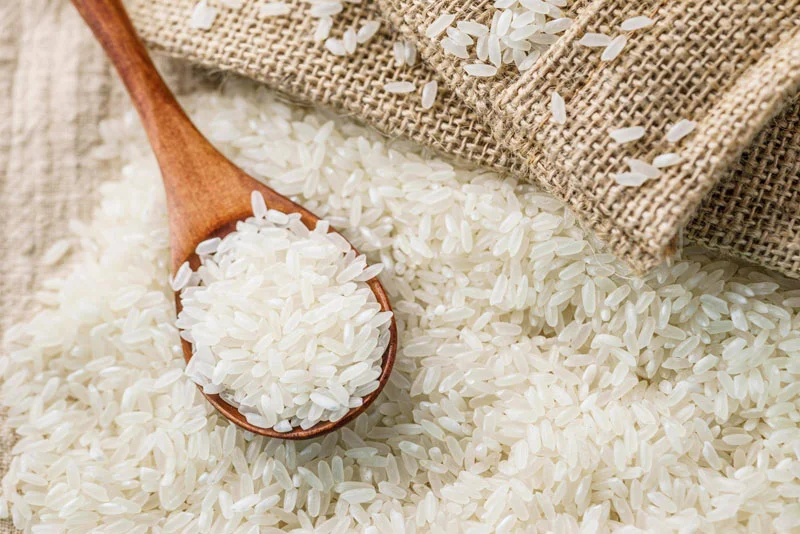

Крупы являются неотъемлемой частью многих культурных традиций питания, и их ценность неоспорима. С течением времени они стали не только основным источником питания, но и символом здорового образа жизни. Благодаря своей питательной ценности и разнообразию, крупы играют важную роль в поддержании нашего здоровья и общего благополучия.
Крупы являются богатым источником клетчатки, белка, витаминов и минералов, необходимых для нормального функционирования организма. Они обеспечивают нас энергией, помогают контролировать уровень холестерина и сахара в крови, поддерживают здоровье сердца, укрепляют иммунную систему и способствуют нормализации пищеварения.
В этой статье мы сосредоточимся на пяти самых полезных крупах, которые не только вкусны, но и предлагают невероятные преимущества для нашего здоровья. Мы рассмотрим гречку, овсянку, рис, пшено и ячмень - их особенности, питательные свойства и вклад в общее благополучие.
Гречка является одной из самых полезных круп благодаря своему богатому составу. Она содержит высокое количество клетчатки, белка и минералов, таких как железо, магний и цинк. Гречка также обладает антиоксидантными свойствами благодаря наличию рутина и кверцетина. Антиоксиданты помогают защищать организм от свободных радикалов и снижают риск развития хронических заболеваний, включая сердечно-сосудистые заболевания и некоторые виды рака.
Своеобразный ореховый вкус гречки делает ее привлекательной для разнообразных блюд. Она может использоваться как главное блюдо или добавляться в супы, салаты и каши. Гречка также доступна в виде муки и хлопьев, что расширяет ее возможности использования в кулинарии.
Гречка имеет низкий гликемический индекс, что означает, что она способствует более устойчивому уровню сахара в крови, что особенно важно для людей с диабетом или предрасположенностью к этому заболеванию. Благодаря своей высокой клетчатке, гречка способствует нормализации пищеварения и улучшает кишечную мотильность.
Добавление гречки в свой рацион может помочь улучшить пищеварение, поддерживать стабильный уровень сахара в крови, укрепить иммунную систему и защитить организм от окислительного стресса.
Овсянка является отличным источником растворимой клетчатки, которая помогает снижать уровень холестерина в крови. Благодаря своей способности привязывать к себе холестерин и удалять его из организма, овсянка считается одним из лучших продуктов для поддержания здоровья сердца. Растворимая клетчатка также способствует длительному чувству сытости, что может помочь в контроле аппетита и поддержании здорового веса.
Овсянка содержит бета-глюкан, специальный тип клетчатки, который является ключевым фактором в пользе этой крупы для здоровья. Бета-глюкан имеет положительный эффект на уровень сахара в крови, помогая регулировать его и предотвращая резкие скачки после приема пищи. Это особенно важно для людей с диабетом или предрасположенностью к этому заболеванию.
Овсянка также богата витаминами группы B, которые играют важную роль в обмене веществ и энергетических процессах организма. Она содержит важные минералы, такие как железо, цинк и магний, которые поддерживают здоровье крови, иммунную систему и общую энергетику.
Еще одним преимуществом овсянки является ее способность снижать риск развития сердечно-сосудистых заболеваний. Регулярное употребление овсянки связано с улучшением состояния сосудов, снижением артериального давления и сокращением уровня вредного холестерина.
Овсянка - универсальный продукт, который можно приготовить различными способами. Она может быть использована для приготовления традиционной овсяной каши, добавлена в выпечку, мюсли или смузи. Благодаря своей нежной текстуре и нейтральному вкусу овсянка легко сочетается с различными ингредиентами и приправами.
Добавление овсянки в ваш рацион может помочь снизить уровень холестерина, поддерживать уровень сахара в крови, улучшить работу кишечника и способствовать общему здоровью сердца. Овсянка - это простой и доступный способ повысить питательность вашего питания и улучшить ваше благополучие.

Рис является одной из самых популярных и широко используемых круп во всем мире. Он является основным источником пищи для миллионов людей и обладает не только отличным вкусом, но и множеством полезных свойств.
Рис является низкокалорийным продуктом, богатым углеводами, витаминами и минералами. Рис содержит витамин В1, который играет важную роль в обмене углеводов и поддержании нормальной функции нервной системы. Богатые углеводы, содержащиеся в рисе, обеспечивают необходимую энергию для активной жизни и физических тренировок. Важные минералы, такие как железо, цинк и магний, помогают поддерживать нормальную работу иммунной системы, кровообращения и общего здоровья. Рис также богат клетчаткой, что способствует нормализации пищеварения и улучшению кишечной мотильности.
Один из важных аспектов риса - его низкий уровень жира и холестерина. Рис является хорошим выбором для людей, следящих за своим весом и стремящихся к поддержанию здорового сердца. Благодаря своему низкому содержанию насыщенных жиров и холестерина, рис может помочь снизить риск сердечно-сосудистых заболеваний и поддерживать здоровый уровень холестерина в крови.
Рис является основой для многих блюд и может быть использован в различных кулинарных культурах. От классического пилава до суши и роллов, рис демонстрирует свою универсальность и способность сочетаться с разнообразными ингредиентами. Благодаря своей нейтральной вкусовой палитре, рис может быть адаптирован к различным блюдам и приправам.
Добавление риса в ваш рацион может помочь в поддержании здорового веса, улучшении пищеварения, обеспечении энергии и поддержании здоровья сердца. Рис является вкусным и питательным продуктом, который должен стать основой вашего здорового питания.
Пшено - это цельнозерновая крупа, которая обладает множеством преимуществ и питательных свойств. Она является источником большого количества клетчатки, особенно растворимой, белка, витаминов и минералов, что делает ее ценным продуктом для поддержания здорового образа жизни.
Растворимая клетчатка способствует нормализации пищеварения, регулирует уровень холестерина и сахара в крови, а также способствует созданию ощущения сытости. Благодаря своей способности привязывать к себе жиры и удалять их из организма, пшено помогает снизить уровень холестерина и поддерживает здоровье сердца.
Пшено также является отличным источником растительного белка. Белок, содержащийся в пшене, обеспечивает все необходимые аминокислоты, что делает его ценным продуктом для вегетарианцев и веганов. Белок пшена также обладает высокой биологической ценностью, что означает, что он легко усваивается организмом.
Пшено богато витаминами группы B, которые играют важную роль в обмене веществ, поддержании здоровья нервной системы и энергетических процессах организма. Оно также содержит минералы, такие как магний, железо и цинк, которые поддерживают здоровье костей, иммунную систему и общую энергетику.
Пшено имеет нежный и приятный ореховый вкус, что делает его привлекательным в кулинарии. Оно может быть использовано для приготовления каши, супов, салатов и гарниров. Пшено также доступно в виде муки и хлопьев, что позволяет варьировать его использование в кулинарии.
Добавление пшена в рацион может помочь укрепить иммунную систему, поддерживать здоровье сердца, обеспечивать длительное ощущение сытости и поддерживать нормализацию уровня холестерина и сахара в крови. Пшено предлагает множество вариантов приготовления и может быть прекрасным дополнением к вашему здоровому питанию.
Ячмень - это одна из самых питательных и полезных круп. Он имеет богатый состав, предлагая множество питательных веществ и преимуществ для нашего здоровья.
Ячмень содержит обширное количество клетчатки, включая бета-глюкан, которая является важным компонентом здорового пищеварения. Бета-глюкан формирует вязкость в пищеварительном тракте, связывая холестерин и помогая его выводить из организма. Клетчатка помогает регулировать перистальтику кишечника, предотвращает запоры и способствует поддержанию здоровой микрофлоры в кишечнике. Благодаря этому, ячмень помогает улучшить пищеварение и поддерживать нормальную функцию кишечной системы.
Ячмень содержит витамины группы B, которые играют важную роль в обмене веществ и поддержании нервной системы в здоровом состоянии. Он также обладает высоким содержанием минералов, таких как магний, железо и цинк, которые помогают поддерживать иммунную систему, улучшают общую энергетику и способствуют здоровью костей.
Употребление ячменя также может быть связано со снижением риска развития некоторых видов рака. Ячмень содержит фитоэстрогены, такие как линолевая кислота, которые имеют антираковые свойства и могут помочь предотвратить развитие рака груди, простаты и толстой кишки.
Ячмень может служить основой для супов, салатов и побочных блюд. Ячмень также используется для приготовления напитка под названием ячменное кофе, который является замечательной альтернативой обычному кофе и имеет свои собственные преимущества для здоровья.
Добавление ячменя в рацион может помочь снизить уровень холестерина, поддерживать здоровье кишечной системы, укреплять иммунную систему и снижать риск развития некоторых видов рака. Ячмень предлагает разнообразные варианты приготовления и может стать важной составляющей вашего здорового питания.
Крупа играет важную роль в нашем здоровье и благополучии. Гречка, овсянка, рис, пшено и ячмень - все они предлагают множество питательных веществ и имеют положительное влияние на наш организм. Включение этих круп в наш рацион может помочь укрепить иммунную систему, поддерживать здоровое пищеварение, снижать уровень холестерина и улучшить общую жизнеспособность. Развивайте свои кулинарные навыки, экспериментируйте с разными крупами и наслаждайтесь их пользой для вашего организма.